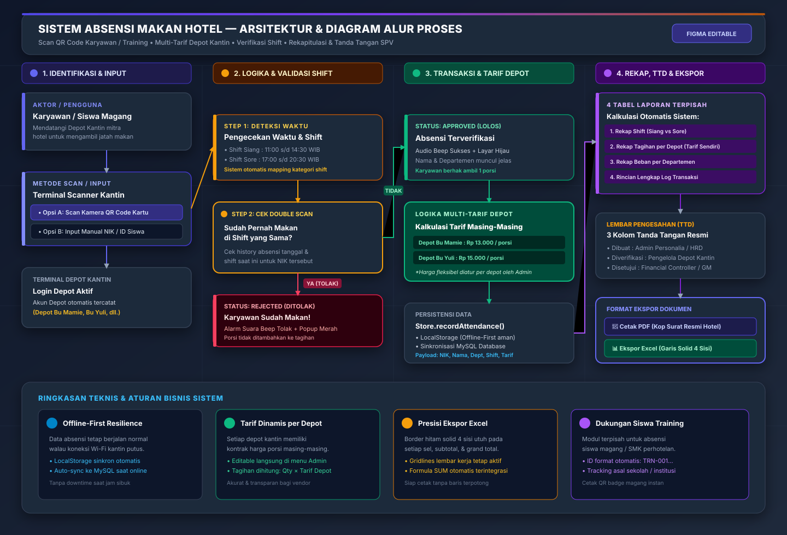

Diagram alur resmi mencakup Scan QR, Validasi Shift, Multi-Tarif Depot, 4 Rekapitulasi & TTD Atasan.
diagram-flow-absensi.svg langsung ke dalam lembar kerja Figma!
flowchart TD
%% Styling Global
classDef actorStyle fill:#1e1b4b,stroke:#6366f1,stroke-width:2px,color:#fff
classDef inputStyle fill:#1e293b,stroke:#3b82f6,stroke-width:2px,color:#fff
classDef decisionStyle fill:#451a03,stroke:#f59e0b,stroke-width:2px,color:#fff
classDef successStyle fill:#064e3b,stroke:#10b981,stroke-width:2px,color:#fff
classDef rejectStyle fill:#4c0519,stroke:#f43f5e,stroke-width:2px,color:#fff
classDef reportStyle fill:#3b0764,stroke:#a855f7,stroke-width:2px,color:#fff
subgraph LANE1 ["1. IDENTIFIKASI & INPUT"]
A["Karyawan / Anak Magang"]:::actorStyle -->|Datang ke Depot Kantin| B["Terminal Scanner Kantin"]:::inputStyle
B --> C{"Metode Presensi"}:::decisionStyle
C -->|Scan Kamera| D["Scan QR Code Kartu ID"]:::inputStyle
C -->|Input Manual| E["Ketik ID / NIK Karyawan"]:::inputStyle
end
subgraph LANE2 ["2. LOGIKA & VALIDASI SISTEM"]
D --> F["Deteksi Waktu & Shift Makan"]:::decisionStyle
E --> F
F -->|Di Luar Shift| G["Tolak: Di Luar Jam Makan"]:::rejectStyle
F -->|Shift Valid| H{"Cek History: Sudah Makan di Shift Ini?"}:::decisionStyle
H -->|Ya: Double Scan| I["Tolak: Karyawan Sudah Makan"]:::rejectStyle
I --> J["Alarm Beep Merah & Popup Tolak"]:::rejectStyle
H -->|Belum Makan| K["Lolos: Verifikasi Disetujui"]:::successStyle
K --> L["Audio Beep Berhasil & Layar Hijau"]:::successStyle
end
subgraph LANE3 ["3. TRANSAKSI & MULTI-TARIF KANTIN"]
L --> M["Ambil Data Depot Terpilih"]:::inputStyle
M --> N["Kalkulasi Tarif Masing-Masing Depot"]:::successStyle
N -->|Contoh Depot Bu Mamie| N1["Tarif: Rp 13.000 / porsi"]:::successStyle
N -->|Contoh Depot Bu Yuli| N2["Tarif: Rp 15.000 / porsi"]:::successStyle
N1 --> O["Catat Transaksi: Store.recordAttendance()"]:::successStyle
N2 --> O
O --> P["LocalStorage (Offline-First)"]:::inputStyle
O --> Q["Sinkronisasi Database MySQL (api.php)"]:::inputStyle
end
subgraph LANE4 ["4. MONITORING, REKAP & PENGESAHAN"]
O --> R["Update Realtime Dashboard & Kuota"]:::reportStyle
R --> S["Kalkulasi 4 Rekapitulasi Laporan"]:::reportStyle
S --> T1["1. Rekap Shift (Siang vs Sore)"]:::reportStyle
S --> T2["2. Rekap Tagihan per Depot (Tarif Sendiri)"]:::reportStyle
S --> T3["3. Rekap Beban per Departemen"]:::reportStyle
S --> T4["4. Rincian Log Transaksi Harian"]:::reportStyle
T1 & T2 & T3 & T4 --> U["Lembar Pengesahan: 3 Kolom Tanda Tangan"]:::reportStyle
U -->|Dibuat| U1["Admin Personalia / HRD"]
U -->|Diverifikasi| U2["Pengelola Depot Kantin"]
U -->|Disetujui| U3["General Manager / Finance"]
U --> V1["Ekspor PDF (Kop Surat Resmi Hotel)"]:::reportStyle
U --> V2["Ekspor Excel (Border Solid 4 Sisi & Rumus)"]:::reportStyle
end